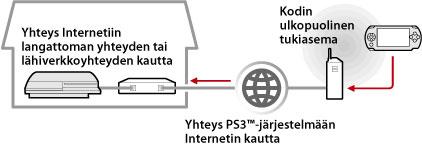
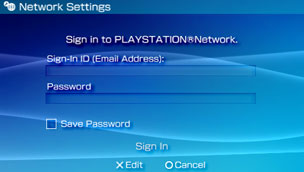

Verkko > Etäkäyttö (Internetin kautta)
Etäkäyttö (Internetin kautta)
Tämän toiminnon käyttäminen saattaa edellyttää, että PS3™- ja PSP™-järjestelmien käyttöjärjestelmät päivitetään.
Käyttämällä PSP™-järjestelmää ja langatonta tukiasemaa (esimerkiksi jotakin kaupallista langatonta LAN-palvelua tai WLAN-verkkoa), voit muodostaa yhteyden kotonasi sijaitsevaan PS3™-järjestelmään Internetin kautta. Etäkäytön käyttäminen kodin ulkopuolelta edellyttää, että PS3™-järjestelmä on asetettu etäkäyttöyhteyden valmiustilaan.

Vihje
Kaupallisten tukiasemapalveluiden (WLAN-verkkojen) käyttötavat ja kustannukset vaihtelevat palveluntarjoajan mukaan. Pyydä lisätietoja palveluntarjoajalta.
Valmisteleminen (1) (PS3™- ja PSP™-järjestelmät)
PSP™-järjestelmä täytyy rekisteröidä PS3™-järjestelmään (eli niiden välille täytyy muodostaa yhteys) ennen ensimmäistä etäkäyttöä. Rekisteröi järjestelmä valitsemalla  (Asetukset) >
(Asetukset) >  (Etäkäyttöasetukset) > [Rekisteröi laite].
(Etäkäyttöasetukset) > [Rekisteröi laite].
Valmisteleminen (2) (PS3™-järjestelmä)
Aseta PS3™-järjestelmä valmiustilaan. [Etäkäynnistys]-asetukseksi täytyy valita [Päällä], jotta PS3™-järjestelmän voi käynnistää PSP™-järjestelmän kautta.
1. |
Tee seuraavat asetukset PS3™-järjestelmässä:
|
|---|---|
2. |
Sammuta PS3™-järjestelmä. |
 (Käyttäjät).
(Käyttäjät). (Sammuta), jos haluat sammuttaa järjestelmän ja siirtää sen valmiustilaan. Varmista, että virran merkkivalo palaa punaisena.
(Sammuta), jos haluat sammuttaa järjestelmän ja siirtää sen valmiustilaan. Varmista, että virran merkkivalo palaa punaisena.Vihje
Lisätietoja vaiheessa 1 kuvatuista asetuksista on tämän oppaan kohdassa (Asetukset) > (Etäkäyttöasetukset) > [Etäkäynnistys].
Valmisteleminen (3) (PSP™-järjestelmä)
Muodosta verkkoyhteys PSP™-järjestelmän liittämiseksi tukiasemaan. Jos käytät etäkäyttöä Internetin kautta, voit käyttää tukiasemaa, kuten jotakin kaupallista WLAN-verkkoa tai -palvelua. Lisätietoja on PSP™-järjestelmän käyttöoppaassa.
Etäkäytön käyttäminen
1. |
Valitse PSP™-järjestelmässä |
|---|---|
2. |
Valitse [Connect via Internet] (Muodosta yhteys Internetin kautta). |
3. |
Valitse yhteysluettelosta sen tukiaseman yhteys, jota käytetään etäkäytössä. |
4. |
Kirjoita käytettävän tilin PlayStation®Network-käyttäjätunnus ja -salasana.  Jos yhteyden muodostaminen onnistuu, PS3™-järjestelmän näyttö tulee näkyviin PSP™-järjestelmässä. |
 (Verkko) >
(Verkko) >  (Etäkäyttö).
(Etäkäyttö).Etäkäytön lopettaminen
Paina PSP™-järjestelmän PS-näppäintä (HOME-näppäintä) ja valitse sitten [Quit Remote Play] > [Quit and Turn Off the PS3™ System].
Vihje
Valitse [Quit Without Turning Off the PS3™ System], jos käytät PS3™-järjestelmää tiedostojen kopioimiseen, taustalataamiseen tai muihin toimiin, jotka edellyttävät, että järjestelmän virta on kytkettynä.
Etäkäytön käyttäminen Internetin kautta
Etäkäyttöä ei ehkä voi käyttää Internetin kautta käytössä olevasta verkkolaitteesta riippuen. Tutustu seuraaviin tietoihin tällaisissa tapauksissa.
- Valitse (Asetukset)-kohdan alta
 (Verkkoasetukset)-kohdasta [Internet-yhteyden testaus], jos haluat tarkistaa, että PSP™-järjestelmä voi muodostaa yhteyden Internetiin ja PlayStation®Network-verkkoon.
(Verkkoasetukset)-kohdasta [Internet-yhteyden testaus], jos haluat tarkistaa, että PSP™-järjestelmä voi muodostaa yhteyden Internetiin ja PlayStation®Network-verkkoon. - Jos käytössä oleva reititin tukee UPnP-ominaisuuksia, ota reitittimen UPnP-toiminnot käyttöön.
- Jos käytettävä reititin ei tue UPnP-toimintoja, reitittimen porttien uudelleenohjaus on määritettävä sallimaan yhteydet PS3™-järjestelmään Internetistä. Etäkäytössä käytettävä portti on TCP: 9293. Lisätietoja tämän asetuksen määrittämisestä on reitittimen mukana toimitetuissa ohjeissa.
- Porttien uudelleenohjaus on toiminto, jonka avulla tiettyyn porttiin saapuvia signaaleja voidaan ohjata haluttuun kohdeporttiin. Tästä toiminnosta käytetään toisinaan myös nimityksiä "porttien määrittäminen" ja "osoitteenmuunnos".
- Jos PS3™-järjestelmä on liitetty Internetiin kahden tai useamman reitittimen kautta, tietoliikenne ei ehkä toimi oikein.
Vihjeitä
- Reititin on laite, jonka avulla samaa Internet-yhteyttä voidaan käyttää monissa eri laitteissa.
- Reitittimen ja Internet-palveluntarjoajan suojausasetukset saattavat myös rajoittaa tietoliikennettä. Lisäohjeita saa käytettävän verkkolaitteen käyttöohjeesta ja Internet-palveluntarjoajalta.